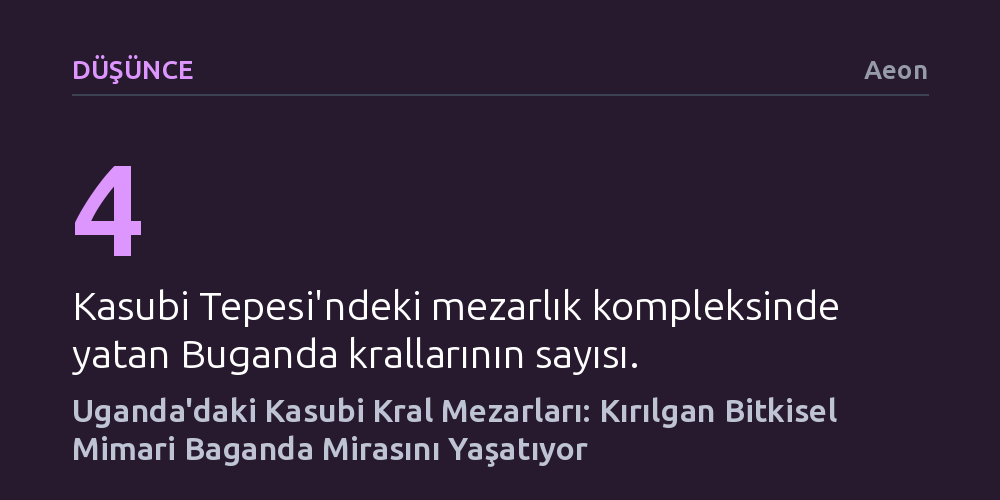

DUSUNCE · Aeon · 2026-10-13
Uganda'daki Kasubi Kral Mezarları, bitkisel malzemelerinin getirdiği fiziksel kırılganlığa rağmen Baganda halkının manevi değerlerini ve asırlık krallık kimliğini yaşatıyor. Belgesel, 2010 yangınının ardından yürütülen restorasyonun salt mimari bir onarım değil, toplumsal hafızanın yeniden inşası olduğunu belgeliyor.
Tarihi anıtların değerinin yalnızca taştan ve kalıcılıktan ibaret olmadığını, organik malzemeyle inşa edilen kırılgan yapıların da yaşayan bir toplumun manevi sürekliliğini taşıyabileceğini gösteriyor.

Uganda’nın başkenti Kampala’daki Kasubi Tepesi, yüzyıllardır varlığını koruyan Buganda Krallığı’nın dört hükümdarının ebedi istirahatgâhına ev sahipliği yapıyor. Burası geçmişte kalmış, terk edilmiş bir tarih kalıntısı değil; Baganda halkının gündelik yaşamında, inanç dünyasında ve siyasi hafızasında merkezi rol oynamayı sürdüren yaşayan bir manevi merkezdir.
Asırlık monarşinin kalbi sayılan bu anıt alan, krallığın kültürel ve toplumsal sürekliliğinin en somut simgesi durumundadır. Topluluk için kralların mezarları yalnızca geçmiş liderlerin hatırasını saklamakla kalmaz; halkın ortak değerlerini, maneviyatını ve atalarıyla kurduğu bağı simgeler.
Kasubi Mezarları’nın en belirleyici yapısal özelliği, inşasında tamamen saz, kamış, ahşap ve lif gibi bitkisel malzemelerin kullanılmış olmasıdır. Bu organik yapı tarzı anıta benzersiz bir mimari kimlik kazandırsa da sürekli bakım ve onarım gerektirir; yapıyı dış tehditlere ve zamana karşı son derece savunmasız bırakır.
Bitkisel malzemenin getirdiği bu kırılganlık, Mart 2010’da kompleksin büyük bir bölümünü küle çeviren yıkıcı yangınla acı biçimde görünür hale geldi. Yangın yalnızca ahşap ve sazdan çatıları yok etmekle kalmadı, Baganda halkının kolektif belleğinde de derin bir yara açtı; ancak bu felaket aynı zamanda yapının toplum için ne denli vazgeçilmez olduğunu bir kez daha kanıtladı.
Etiyopya asıllı Amerikalı yönetmen Sosena Solomon’un imzasını taşıyan belgesel film; Buganda Krallığı başbakanı, mimarlar ve geleneksel ustaların önderliğinde yürütülen titiz restorasyon sürecini ele alıyor. Yapım, fiziksel bir yapının onarılmasının ötesine geçerek geleneksel zanaat tekniklerinin ve toplumsal dayanışmanın nasıl yeniden ayağa kalktığını kayıt altına alıyor.
Metropolitan Sanat Müzesi ile Dünya Anıtlar Fonu iş birliğinde hazırlanan Afrika’nın Kültürel Anıtları serisinin parçası olan bu çalışma, anıtların yalnızca taş ve mermerden ibaret olmadığını gösteriyor. Kasubi Mezarları, bitkisel mimarinin fiziksel geçiciliği ile bir halkın manevi kararlılığının iç içe geçtiği canlı bir kültürel direniş örneği sunuyor.